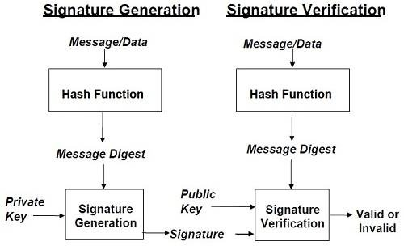
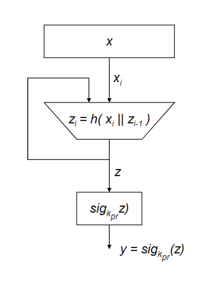

A digital signature is a mathematical scheme that proves the authenticity of a digital message or document. It is the digital equivalent of a handwritten signature or a wax seal.
Core Security Services in Cryptography
The primary objectives of a security system are called security services. Digital signatures specifically provide the last three, while encryption provides the first:
Confidentiality: Information is kept secret from all but authorized parties. (Provided by encryption, NOT digital signatures)
Integrity: Ensures that a message has not been modified in transit.
Message Authentication: Ensures that the sender of a message is authentic (also known as data origin authentication).
Non-Repudiation: Ensures that the sender of a message cannot later deny having created or sent the message.
💡 Key Difference from MACs: A digital signature uses an asymmetric key pair. The signer uses their private key. Anyone with the public key can verify. This is what enables non-repudiation — only you have your private key.
2. The Signing & Verification Process
Digital signatures are always applied to the hash of the message, not the message itself. This is more efficient for large documents and ensures a fixed-size input to the signature algorithm.
Signing (by Alice)
Message (M)
→
Hash Function H
→
Digest H(M)
→
Sign with Alice's Private Key
→
Signature σ
Verification (by Bob)
Signature σ
→
Verify with Alice's Public Key
→
Recovered H(M)
→
Compare to H(M) computed from M
→
✅ Match = Valid

📝 Original handwritten notes (Basic Digital Signature)

DS with hash: message x is hashed → digest z → signed with kpr → signature y
3. RSA Digital Signatures
RSA can be used for signing by reversing the encryption/decryption roles. The private key is used to sign, and the public key is used to verify.
Key Generation (same as RSA Encryption)
Choose two large primes \( p \) and \( q \). Compute \( n = p \times q \).
Compute \( \phi(n) = (p-1)(q-1) \).
Choose public exponent \( e \) such that \( \gcd(e, \phi(n)) = 1 \).
Compute private exponent \( d \) such that \( e \times d \equiv 1 \pmod{\phi(n)} \).
💡 Why does this work? Because of RSA's symmetry: \( (M^d)^e = M^{de} \equiv M \pmod{n} \). The private key operation is the "inverse" of the public key operation.
4. DSA — Digital Signature Algorithm
The NIST-standardized signature algorithm (FIPS 186). Based on the Discrete Logarithm Problem. Unlike RSA, DSA can only be used for signing (not encryption).
DSA Parameters (Public)
\( p \): A large prime (e.g., 1024-3072 bits)
\( q \): A prime factor of \( p-1 \) (e.g., 160-256 bits)
\( g \): A generator of the subgroup of order \( q \) in \( \mathbb{Z}_p^* \)
Key Generation
Private key: \( x \) — a random integer \( 1 < x < q \)
Public key: \( y = g^x \pmod{p} \)
Signing a Message M
Choose a random secret nonce \( k \) \( (0 < k < q) \).
Compute \( r = (g^k \pmod{p}) \pmod{q} \). If \( r = 0 \), choose new \( k \).
Compute \( s = k^{-1}(H(M) + xr) \pmod{q} \). If \( s = 0 \), choose new \( k \).
Signature is \( (r, s) \).
⚠️ Critical: The nonce k MUST be unique and random for every signature! Reusing k allows an attacker to trivially compute the private key x. This was the exact vulnerability exploited to break Sony PlayStation 3's security in 2010.
5. ECDSA — Elliptic Curve DSA
The elliptic curve variant of DSA. Provides the same security as DSA with much smaller key sizes. Widely used today (Bitcoin, TLS 1.3, SSH).